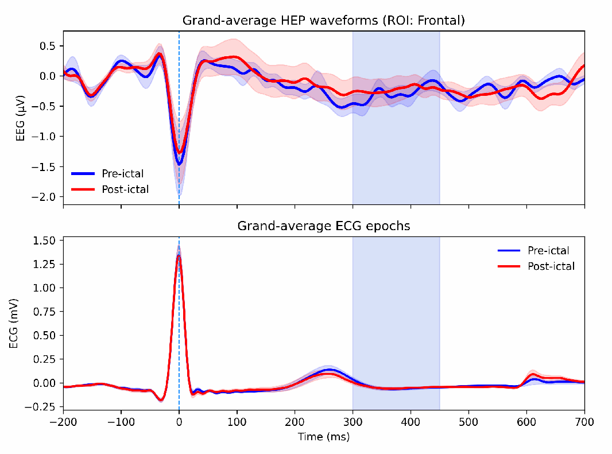
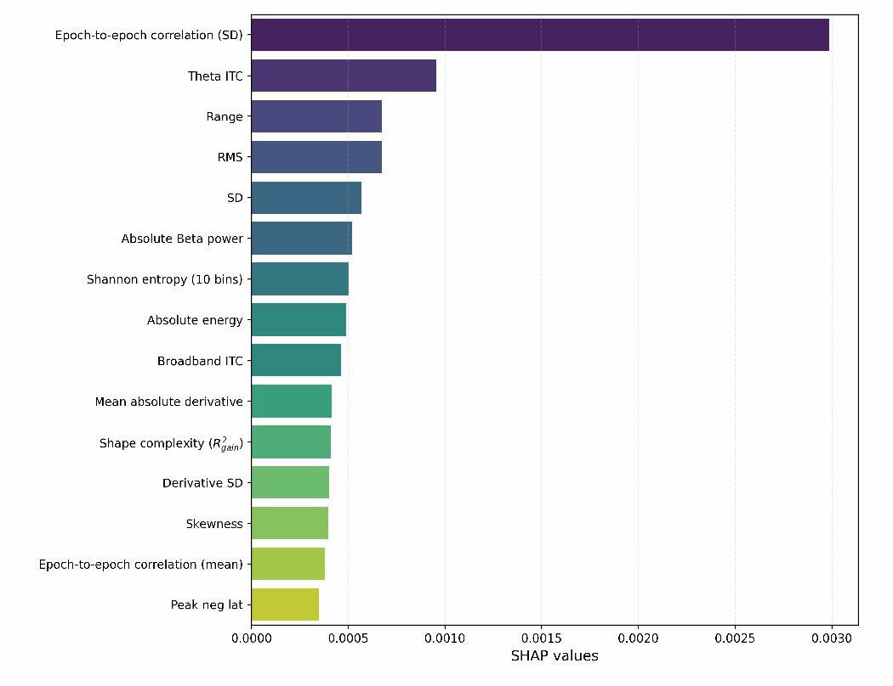

The research question
Heartbeat-evoked potentials (HEPs) are EEG responses aligned to the ECG R-peak. This study asked whether features of those responses distinguish the periods before and after seizures in people with temporal lobe epilepsy.
We analysed 33 seizures from 12 patients selected from the Siena Scalp EEG Dataset, version 1.0.0, available through PhysioNet. Recordings contained simultaneous EEG and ECG sampled at 512 Hz. Comparisons used 10-minute pre-ictal and post-ictal segments, with one retained post-ictal segment lasting 9 minutes 39 seconds.
My contribution
During my research internship, I processed EEG and ECG recordings in Python, extracted time-domain and time-frequency features, compared machine-learning models with cross-validation, and used SHAP to examine what drove their predictions.
I am the second author of the study, with Matteo Saibene and Sadasivan Puthusserypady at DTU Health Tech. The methods and results below describe our shared study.
Signals & model analysis
Preparing heartbeat-aligned EEG
EEG preprocessing used a 0.3–30 Hz bandpass, a 50 Hz notch filter and resampling to 256 Hz. Independent component analysis, supported by ICLabel and manual inspection, removed components identified as cardiac, ocular or motion artefacts before common-average referencing. ECG was filtered at 8–20 Hz; NeuroKit2 detected R-peaks, followed by correction of atypical or missed detections.
EEG epochs extended from −200 to +700 ms around each R-peak, with baseline correction over −200 to −50 ms. Feature analysis focused on 300–450 ms after the R-peak. Epochs were rejected when the next heartbeat occurred within 450 ms or peak-to-peak amplitude exceeded 200 µV in any channel. This reduced overlap from subsequent heartbeats during tachycardia.


Features and validation
The feature set combined waveform amplitude and shape, Shannon entropy, spatial summaries, epoch-to-epoch correlation, spectral power and inter-trial coherence, which measures phase consistency across heartbeats. Morlet wavelets covered theta, alpha, beta and broadband activity. Features were calculated across 29 EEG channels, producing 1,193 features per segment after adding global field power statistics and seizure-onset lateralisation.
Five-fold GroupKFold cross-validation grouped data by seizure: the pre- and post-ictal segments of each seizure stayed in the same fold. Standardisation used training data within each fold, and the full feature set was retained without dimensionality reduction. The models included Random Forest, XGBoost, linear discriminant analysis, Gaussian Naive Bayes, logistic regression and an RBF support vector machine.
Results & limitations
| Model | ROC AUC | Balanced accuracy | F1 |
|---|---|---|---|
| Random Forest | 0.8272 ± 0.0620 | 0.7762 ± 0.0598 | 0.7538 ± 0.0838 |
| XGBoost | 0.7716 ± 0.0933 | 0.6786 ± 0.0762 | 0.6667 ± 0.0628 |
| Linear discriminant analysis | 0.7408 ± 0.1471 | 0.6690 ± 0.1642 | 0.6638 ± 0.1525 |
| Gaussian Naive Bayes | 0.6716 ± 0.0569 | 0.6524 ± 0.0787 | 0.6355 ± 0.0751 |
| Logistic regression | 0.6671 ± 0.1599 | 0.6333 ± 0.1392 | 0.6426 ± 0.0864 |
| Logistic regression (L1) | 0.6730 ± 0.09323 | 0.6071 ± 0.1185 | 0.6075 ± 0.1532 |
| SVM (RBF) | 0.7074 ± 0.0881 | 0.4833 ± 0.0372 | 0.5263 ± 0.2946 |
Random Forest achieved the strongest overall cross-validated performance. TreeSHAP explanations, aggregated across electrodes by feature family, identified the standard deviation of epoch-to-epoch pairwise correlation as the most influential feature type. Theta-band inter-trial coherence was another prominent contributor. These results suggest that response consistency across heartbeats carries information beyond isolated amplitude measurements.


This is a pilot demonstration of separability within the dataset. Grouping by seizure prevents paired segments from crossing folds, but patients can appear in both training and test data through different seizures. The results therefore do not establish generalisation to unseen patients or seizure prediction.
The small cohort makes performance sensitive to fold composition. Post-ictal EEG slowing may affect theta coherence and correlation independently of heartbeat-specific processing. Epoch rejection was also higher after seizures: 20.4% ± 18.5%, compared with 9.5% ± 11.5% before seizures. Short post-ictal windows limit conclusions about longer recovery, and larger datasets are needed for patient-level validation and comparisons with interictal periods.
What I took from it
This work reinforced how much model interpretation depends on signal preparation and evaluation design. Looking at heartbeat-aligned traces, rejected epochs and feature contributions made it possible to connect classification scores to the recordings and to recognise competing explanations for the observed differences.
Article
Saibene, M., Godinho, B. J. & Puthusserypady, S. Analysis of Heartbeat Evoked Potentials in Temporal Lobe Epilepsy. Second author.
This case study follows the supplied DTU article. My CV lists the paper for IEEE EMBC 2026.